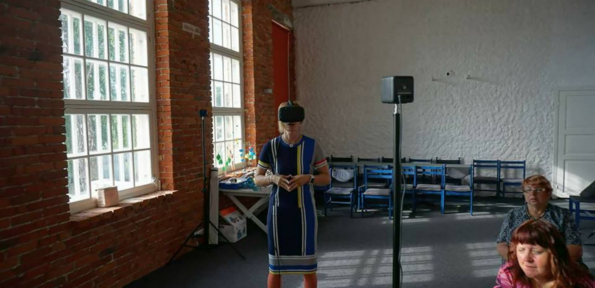

We bring virtual reality to the Political Science course and vocational courses

The aim of the project
1.Different university lecturers(political science and vocational) use Virtual Reality (VR) in their classes
2.Students experimenting, learning by gaming and virtual interaction
Interdisciplinarity approach
To design the teaching plan for the political science and vocational training,we use approach like interview and user
testing.
In the interview,we get more information from our teacher:the targeted user,the demands,knowledge about the subjucts etc.
In the user testing,we let teachers try the vr game we choose.By actually trying these games,we get feedback what kind of
game are more suitable for the classroom and targted users.
Basis of research
1.the article related to Vr and education
“A Comparative Study of the Learning Outcomes and Experience of VR in Education”
“The Role of AR and VR Technologies in Education Developments: Opportunities and Challenges”
“Exploring Virtual Reality in the Higher Education Classroom: Using VR to Build Knowledge and Understanding”
2.the article related to Vr and vocational education
“Potential of VR in the vocational education and training of craftsmen”
““Augmented reality (AR) and virtual reality (VR): the future of interactive vocational education and training for people with handicap“
“Innovative engineering education in the cooperative VR environment”
“Reasons to Use Virtual Reality in Education and Training Courses and a Model to Determine When to Use Virtual Reality”
“Maritime Safety Education with VR Technology (MarSEVR)”
3.the article related to Vr and political science
Free software and the political philosophy of the cyborg world
CYBERCULTURE, CYBORG POST-MODERNISM AND THE SOCIOLOGY OF VIRTUAL REALITY TECHNOLOGIES
Confronting a Moral Dilemma in Virtual Reality: A Pilot Study
Project outcome
1 VR showcase for Mrs Ümarik’s class:Vocational Training
1 VR showcase for Mr Kunitsõn’s class:Political Science
Two lecturers can further develop and apply our materials and results
in their subjects.